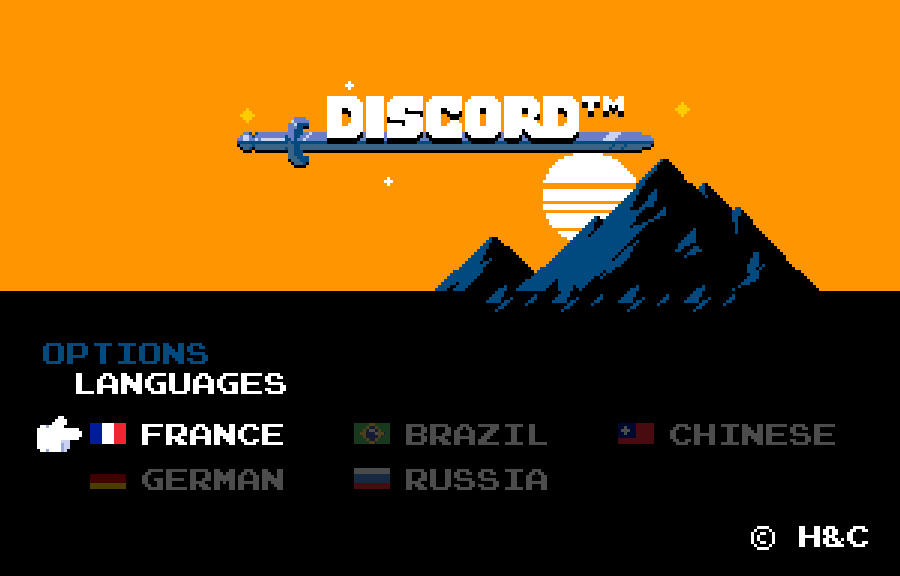

Добро пожаловать в команду переводчиков Discord! #
В Discord зарегистрировано более 87 миллионов пользователей. Но как можно получить такую популярность даже у тех пользователей, кто не дружит с английским? Правильно! Локализация — процесс перевода, который делает каждое приложение доступным для пользователей без требования знания оригинального языка.

Перевод Discord идёт за счёт усилий сообщества: огромное количество энтузиастов, которое использует Discord почти каждый день. Желаете присоединиться к нашей команде и переводить Discord на русский?
Изучите этот документ, чтобы узнать как.
Проект по переводу Discord был официально закрыт 31 июля 2018 г.
Эти документы представлены в архивных целях, чтобы помочь другим проектам. В них могут быть ошибки и неточности. Об ошибках в переводах можно сообщать здесь.
Вступление в проект #
Чтобы начать, необходимо будет подать заявку на вступление в проект по переводу Discord на сайте Crowdin. Обратите внимание на наши требования к заявкам ниже.
Требования к заявкам #
Пожалуйста, включите собственный перевод следующего параграфа в «причину, по которой вы хотите вступить в команду переводчиков» (нам не совсем интересны ваши «я русский»):
Thank you for participating in Discord's official translation project. When writing, we really want you to write with a relaxed and friendly tone. Write informally, as if you were speaking to a very close friend. Be playful and honest. Humor is great but not everywhere and not at the expense of clarity.
Не используйте машинные переводчики (Google, Яндекс). Допустимо использовать словари, такие как Reverso Context и Lingvo Live.
Без перевода ваша заявка будет отклонена. Дополнительный текст не требуется и может усложнить рассмотрение заявки.
Для использования Discord или Crowdin вам должно быть 13 лет (или больше). Для использования Crowdin и Discord в возрасте младше 16 лет необходимо согласие родителя или опекуна. При регистрации на Crowdin вы соглашаетесь с их условиями использования сервиса. Если вы не согласны с условиями использования Crowdin, вы не можете использовать их сервис, соответственно не можете вступить в команду переводчиков Discord.
Вступление на сервер переводчиков #
После получения доступа к переводу Discord, вступите на сервер переводчиков. Там вы сможете задать любые вопросы, учавствовать в дискуссиях, сообщать о разных ошибках, узнавать контекст разных строк, а также будете в курсе всего происходящего. Кроме того, на сервере присутствуют несколько сотрудников Discord, которые имеют отношение к переводу, ну и конечно переводчики всех других языков.
Ссылка на неофициальный сервер переводчиков Discord.
Любое сообщение на сервере переводчиков будет обозначать ваше полное согласие с правилами. Нарушение некоторых из правил на сервере переводчиков приведёт к удалению из команды переводчиков на Crowdin.
Ознакомьтесь с инструментами, правилами и соглашениями #
Вас приняли в проект и вы вступили на сервер?
Отлично, тогда давайте познакомимься со всем нам необходимым, на странице о инструментах переводчика и правилах.